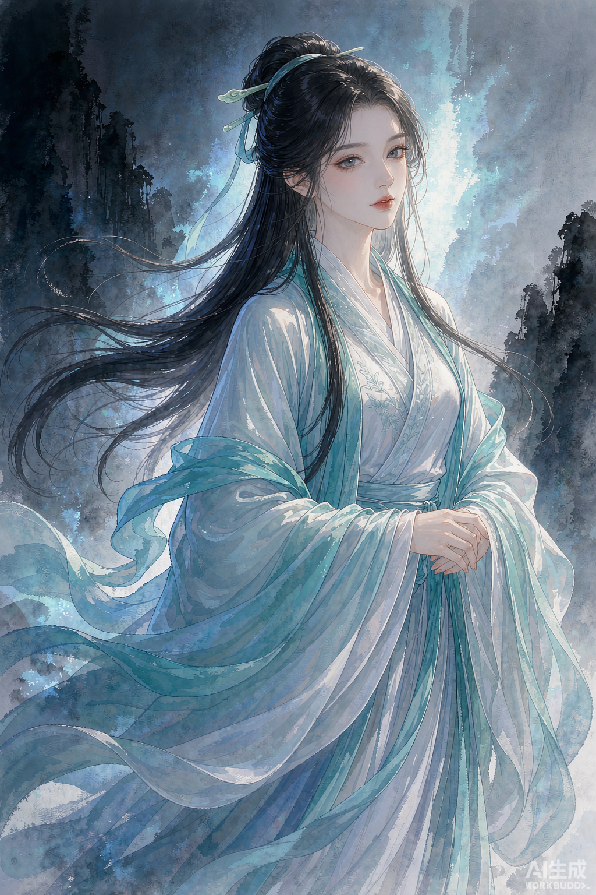

🏮
酒馆 Tavern
选一张角色卡，推开那扇门，故事就此开始。
1选择角色卡必选 · 你将要共同书写故事的那个人
✓

✓＋
导入角色卡
支持 JSON / PNG 拖拽
2选择世界书可选 · 不选则开启自由世界
🌊潮汐城 · 剑与法环
临海港城，魔法需以「记忆」为代价。商会、法师塔与港区帮派暗流涌动。
🌆夜之城 · 2077
霓虹与义体横行的未来都市，公司、帮派与游民共舞。
◇暂不选择
从空白开始，让世界在旅途中一点点被点亮。
3你的身份可选 · 定义玩家在故事中的位置